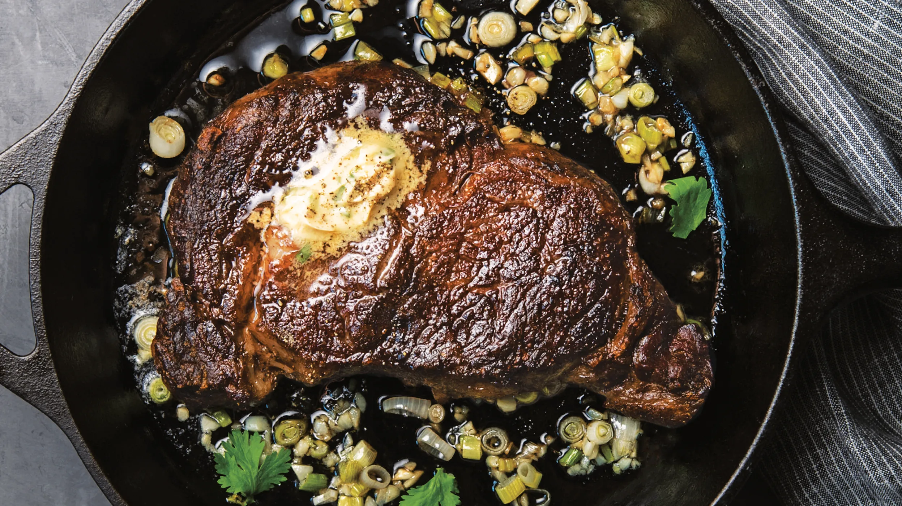

To Homepage
Pan-seared Steak

Description
For everyone who loves steak but is a bit scared to try cooking
one on their own, pan-searing is a simple, yet effective way to
get the most out of your beginner skills.
As for choosing the right "cut", the terminology is nothing to
worry about. Ribeye is solid choice, but the important thing
to know is that the cut is thick enough. Aim for a cut that
is at least an inch thick; a little larger is
fine, but don't go any thinner.
As for the seasonings, salt is the most vital of all and a
coarse salt is nicer if possible, but the rest of the
seasonings should simply be things you want to taste
on your steak. My recipe is just an example.
Ingredients
- Steak (however many cuts you want to make)
- Olive Oil
- Butter
- Paper Towels
- Seasonings
- Salt
- Dill Weed
- Oregano
- Ground Black Pepper
Steps
- Remove any/all packaging from steak and pat it dry with paper towels.
- Pour olive oil into a small pan until it covers the bottom in an unbroken layer. Preheat pan with medium-high heat;
pan is ready when you can flick a drop of water into the oil and hear it sizzle.
- Sprinkle seasoning generously over the steak and use your hands to firmly pat it into place. Flip steak and repeat.
- When pan is ready, carefully lower a cut of the seasoned steak onto the pan with tongs.
- While steak cooks on side one for about 5 minutes, frequently use a spoon to take the resuidual oils from the pan and drizzle it over the top of the steak.
- Use tongs to flip steak on to side two for another 5 minutes, then frequently apply spoon-drizzling technique from previous step.
- Use tongs to flip steak on to side one again for about 2 minutes.
- Turn off heat and transfer steak to either cutting board to prepare for serving, or to the plate of it's recipient; regardless, it's ready to eat!
NOTE: Following these cooking times will generally provide a steak that is medium-rare or medium. Adjust as needed.